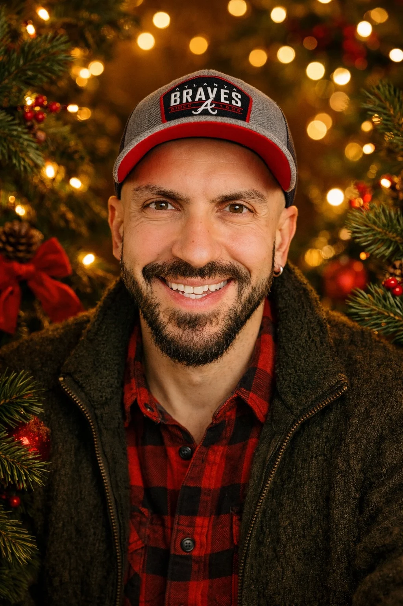

Technology & software
Much of my work has been around digital platforms, technical workflows, product behavior, documentation, access issues, and the practical side of software systems.
01 / About
Technology, language, and the systems behind modern digital work. I care about the connections between them.

Professional direction
Much of my work has been around digital platforms, technical workflows, product behavior, documentation, access issues, and the practical side of software systems.
I have a long background in language, translation, multilingual communication, education, and localization. I care about clarity, tone, meaning, and how words shape user experience.
I follow AI and machine learning with practical interest: how these tools change work, education, communication, documentation, and software.
I like understanding how things connect: people, tools, processes, incentives, design choices, and the invisible rules that shape outcomes.
The creative side
Outside of work, I’m interested in improv, storytelling, travel, football, software, AI, machine learning, and the fictional worlds behind Marvel and DC.
Keep the conversation going
Technology, language, creative work — or something in between.